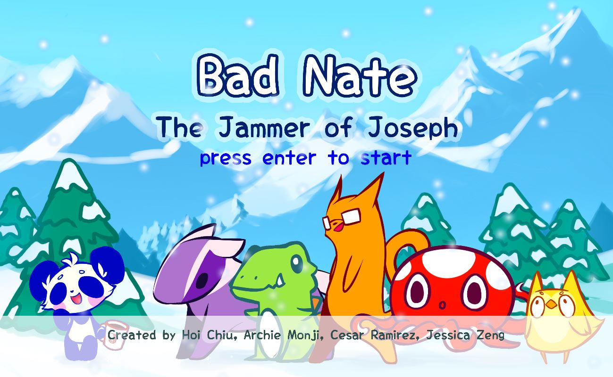

BadNate
One of the more pretty games I had the honor of developing. The game came up from being inspired from one of my past projects, Chibi Fighter. The characters are based off of the developers of the project and our friends. We had fun with this game by making animals that we felt related to each of us, and making them unique. The game featured a terrain that was randomly generated, which helped change the way you played a certain character.
Screenshots from BadNate
Here we have a picture from the middle of development where we made hitboxes for their body and attacks. The red box signifies their body hitbox, while the blue signifies the attack range hitbox. These were based on the animations of the characters in order for the hits to have a response and match up with the animation.
The character select where the players can choose their characters. Each character had a unique set of stats as signified from the stars

Our stage select only consisted of three maps. The only difference among them was the textures used for the background, the terrain and the particles that fell.
You can view the BadNate source code here!
Special Thanks
I would like to thank Jessica Zeng and Hoi Chiu for providing the beautiful art for this lovely game. In addition to Archie Monji who supplied music and programming help.